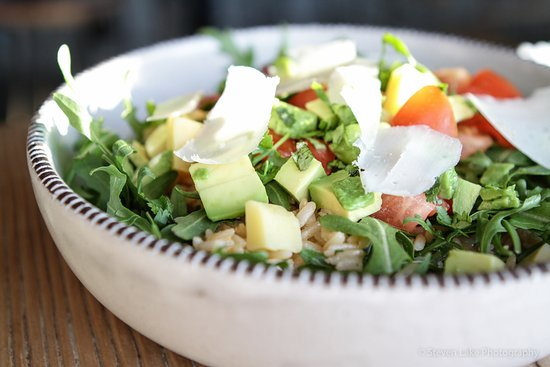

Le Bowl

Description
Below is a recipe for Le Bowl. This is a recipe based on the famous "Le Bowl" salad from Zinque
There are some slight differences from the restaurant version, but this is a quick, delicious, healthy recipe that is great for a weeknight meal
Ingredients
- Rotissere Chicken
- Roma Tomatos
- Comte Cheese
- Arugula
- Lemon
- Brown Rice
- Avocado
- Olive Oil
- Salt
- Pepper
- Sriracha (Optional)
Steps
- Break down rotissere chicken into small pieces, and heat up in a pan
- Dice tomatos and comte cheese
- Cook rice. We use microwaved frozen rice
- Place rice in a large bowl
- Lay down arugula on top of the rice
- Place warm chicken on top of the rice and arugula
- Add the cheese, tomatos, and avocado
- Add salt and pepper to taste
- Squeeze lemon over bowl, and add a light drizzle of olive oil
- (Optional) Add sriracha or any hot sauce of your choice